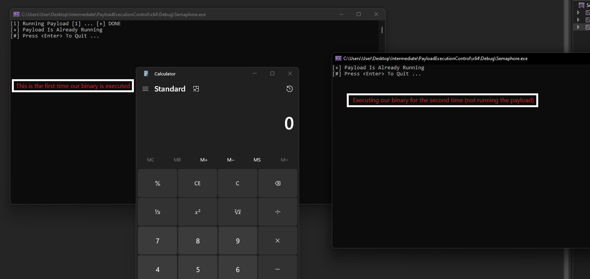
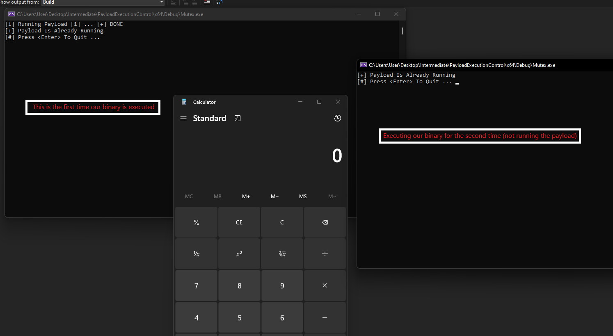
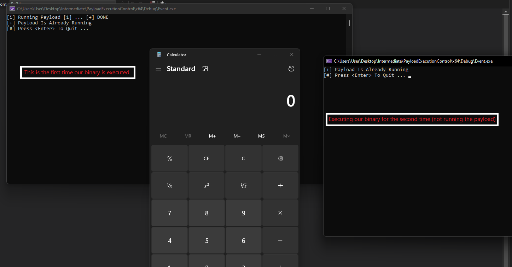

Introduction
In real-world scenarios, it is important to limit the actions performed by a malware and focus on essential tasks. The more actions performed by the malware, the more likely it'll be picked up by monitoring systems.
Windows Synchronization Objects can be utilized to control the execution of a payload. These objects coordinate the access of shared resources by multiple threads or processes, ensuring that shared resources are accessed in a controlled manner and preventing conflicts or race conditions when multiple threads or processes attempt to access the same resource simultaneously. By using synchronization objects, it's possible to control the number of times the payload is executed on a system.
There are several types of synchronization objects, including semaphores, mutexes, and events. Each type of synchronization object works in a slightly different manner but ultimately they all serve the same purpose which is to coordinate access of shared resources.
Semaphores
Semaphores are synchronization tools that utilize a value stored in memory to control access to a shared resource. There are two types of semaphores: binary and counting. A binary semaphore has a value of 1 or 0, indicating whether the resource is available or unavailable, respectively. A counting semaphore, on the other hand, has a value greater than 1, representing the number of available resources or the number of processes that can access the resource concurrently.
To control execution of a payload, a named semaphore object will be created each time the payload is executed. If the binary is executed multiple times, the first execution will create the named semaphore and the payload will be executed as intended. On subsequent executions, the semaphore creation will fail as the semaphore with the same name is already running. This indicates that the payload is currently being executed from a previous run and therefore should not be run again to avoid duplication.
CreateSemaphoreA will be used to create a semaphore object. It is important to create it as a named semaphore to prevent executions after the initial binary run. If the named semaphore is already running, CreateSemaphoreA will return a handle to the existing object and GetLastError will return ERROR_ALREADY_EXISTS. In the code below, if a "ControlString" semaphore is already running, GetLastError will return ERROR_ALREADY_EXISTS.
HANDLE hSemaphore = CreateSemaphoreA(NULL, 10, 10, "ControlString");
if (hSemaphore != NULL && GetLastError() == ERROR_ALREADY_EXISTS)
// Payload is already running
else
// Payload is not runningMutexes
A Mutex, short for "mutual exclusion", is a synchronization tool used to manage access to shared resources among processes and threads. In practical use, a thread attempting to access a shared resource checks the status of the mutex. If it is locked, the thread waits until the mutex is unlocked before proceeding. If the mutex is not locked, the thread locks it, performs the necessary operations on the shared resource, and then unlocks the mutex upon completion. This ensures that only one thread can access the shared resource at a time, preventing conflicts and data corruption.
CreateMutexA is used to created a named mutex as follows:
HANDLE hMutex = CreateMutexA(NULL, FALSE, "ControlString");
if (hMutex != NULL && GetLastError() == ERROR_ALREADY_EXISTS)
// Payload is already running
else
// Payload is not runningEvents
Events are another synchronization tool that can be used to coordinate the execution of threads or processes. They can be either manual or automatic, with manual events requiring explicit set or reset actions and automatic events being triggered by external conditions such as timer expiration or task completion.
To use events in a program, the CreateEventA WinAPI can be employed. The usage of the function is demonstrated below:
HANDLE hEvent = CreateEventA(NULL, FALSE, FALSE, "ControlString");
if (hEvent != NULL && GetLastError() == ERROR_ALREADY_EXISTS)
// Payload is already running
else
// Payload is not runningDemo
Using Semaphores.

Using Mutexes.

Using Events.
